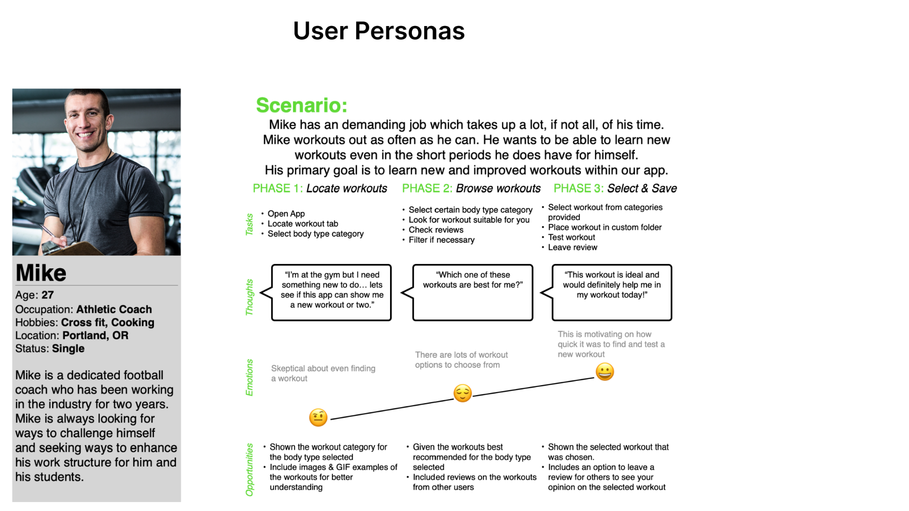
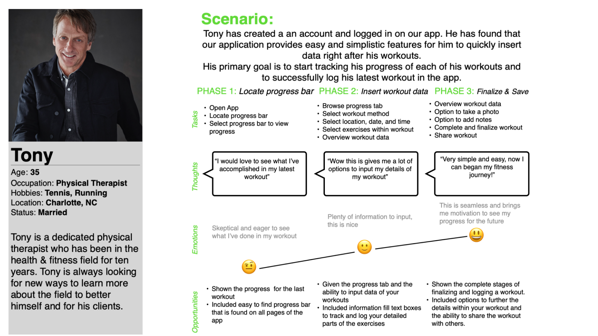
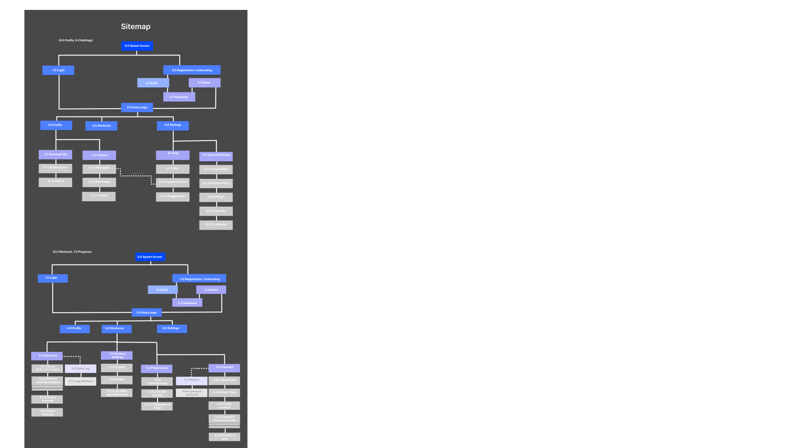
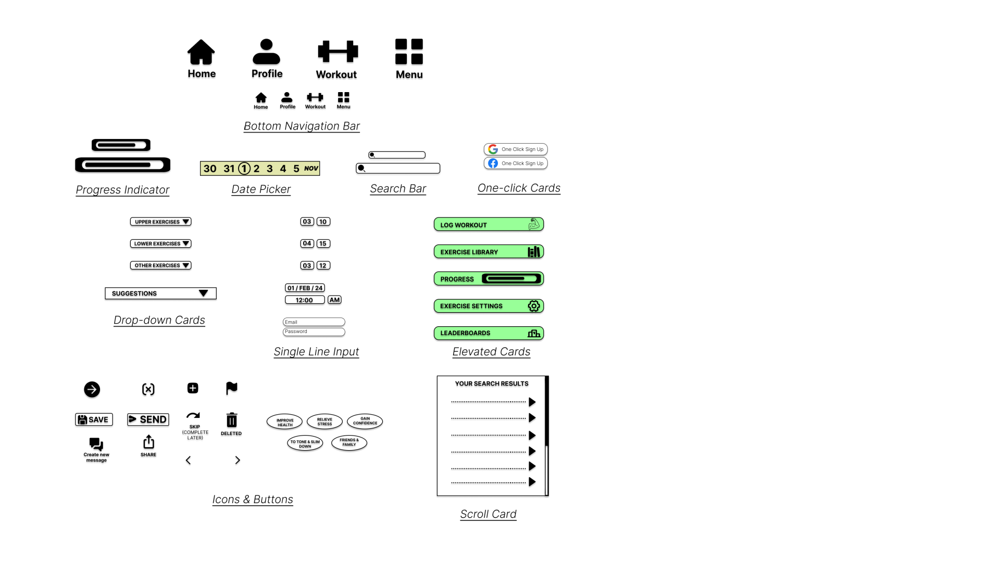

The Health-Wealth App.

Our users who use The Health-Wealth app struggle with staying consistent with their workout or training routine. The users needs a way to help improve their physical and mental wellbeing along with trying to balance their busy schedule, this will help to find confidence and consistency within themselves. Designing an engaging and helpful application for users to live a healthier lifestyle.
Prototypes
Brand Synopsis
A health conscious application for health conscious individuals. An engaging and helpful application for users to achieve a healthier lifestyle. Our users who use The Health-Wealth app struggle with staying consistent with their workout or training routine. The users needs a way to help improve their physical and mental wellbeing along with trying to balance their busy schedule, this will help to find confidence and consistency within themselves. Designing an engaging and helpful application for users to live a healthier lifestyle.
Color
By selecting and applying colors thoughtfully, The Health-Wealth app on using the color Yellow & Green as our brands primary color because at first glance it has a ecstasy and trusting effect to the users emotion. This is essential to the application because not only promoting productivity but trust within the app and ecstasy for users who are using the app seconds before working out. Providing eye-catching accents and emphasis where needed.
Typeface
Inter is a variable font family carefully crafted & designed for computer screens. Inter is a workhorse of a typeface carefully crafted & designed for a wide range of applications, from detailed user interfaces to marketing & signage.
Painpoints
Usability test plans, conducting test, and A&B preferencing test were conducted numerous times while making these diagrams, user personas, sitemaps, and all three stages of wireframes. This goes to show when involving participants to share their thoughts on these designs, their feedback can change your design iterations as a whole to help reach the users needs and goals as a fitness and health application.
Problem Statement
Many users show an interest in becoming more healthy but does not know where to start. Fitness users need a space to explore, motivate, and commit to they routines to further their fitness goals. When new users are given guidance on where to start from the beginning of the experience, they are less likely to lose interest in their fitness journey. This is also true for experienced fitness users who need a safe space to provide all their needs within a workout app.
Our Statement
How might we make fitness users, new and experienced, be interested in using an fitness application? The Health-Wealth app enhances the learning process and exposure to new and beneficial exercises for all users. Users set their own personal health goals and track progress towards those goals. This will make it easier for users to monitor progress, and create a fitness routine. The Health-Wealth application provides a user friendly space where all who uses the app can explore, engage, and get motivated to develop healthier interest and habits for themselves.

Affinity Diagram
From our user interviews, testing, and pain points collected, I have created this affinity diagram to further the progress into creating our target audience. Our user personas will help us build and create our sitemap and our first fidelities of The Health-Wealth application. These user personals are will help us keep the users goals in mind when creating the fidelity wireframes to come.
User Personas
 Site Map
From Sitemap to Fidelity Wireframes
Over time, The Health-Wealth app design approach has evolved significantly. The vision and goal for this app is to help those who struggle with staying consistent with their workout or training routine. The users needs a way to help improve their physical and mental wellbeing along with trying to balance their busy schedule, The Health-Wealth app will help users find confidence and consistency within themselves. Designing an engaging and helpful application for users to log and find quick solutions to their fitness problems resulting in quicker results. With this goal in mind, I conducted surveys, interviews, and competitive analyses to gain a deeper understanding of our users needs and preferences. With the qualitative research as a guiding framework, I proceeded to develop wireframes and prototypes at various fidelity levels from low to high. Each iteration brought new learnings and lead to a more user-centered solution for our target audience. The following pages are key examples of the design iteration process through the creation of The Health-Wealth application.
Low Fidelity

Mid Fidelity (1&2)
From our low-fidelity to mid-fidelity wireframes, I was able to transfer the design to from paper to digital. This made the idea come to life, adding more of a structure and guide to the pages and wireframes.Creating 2 mid-fidelity wireframes helped this process a lot by always improving and building off the design to further reach the users goals and increate the efficiently in the user experience as an app. Additional user testing was taken in between mid fidelity 1 & 2 to improve the designs.

High Fidelity
From our mid-fidelity to high-fidelity wireframes, i was able to design and implement the fine detail within the app and final wireframes. This included text hierarchy, grid layout margins, and designed a whole Health-Wealth design language to follow. The design language guideline consist of an everyday use that aims to be judgement free and supportive in users health journey. The app should provide motivation and guidance to the users. No harsh UI elements, very welcoming & friendly tone always once opening the app. Additional user testing was taken in between the mid fidelity and high-fidelity to improve the designs.

UI Elements and Components
Health-Wealth iconography is intuitive and recognizable, making it easy to quickly understand actions and features and enhancing the user experience. Our reusable UI Components include navigation, buttons, drop-down menus, and input text fields that are designed to promote user interaction and efficiency for the Health-Wealth platform.
